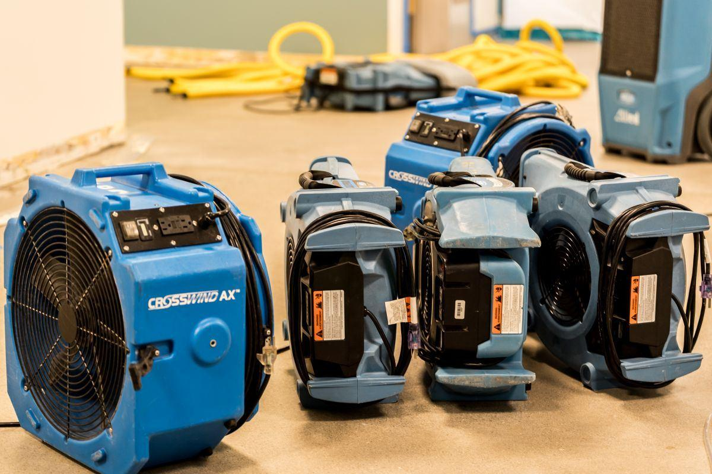
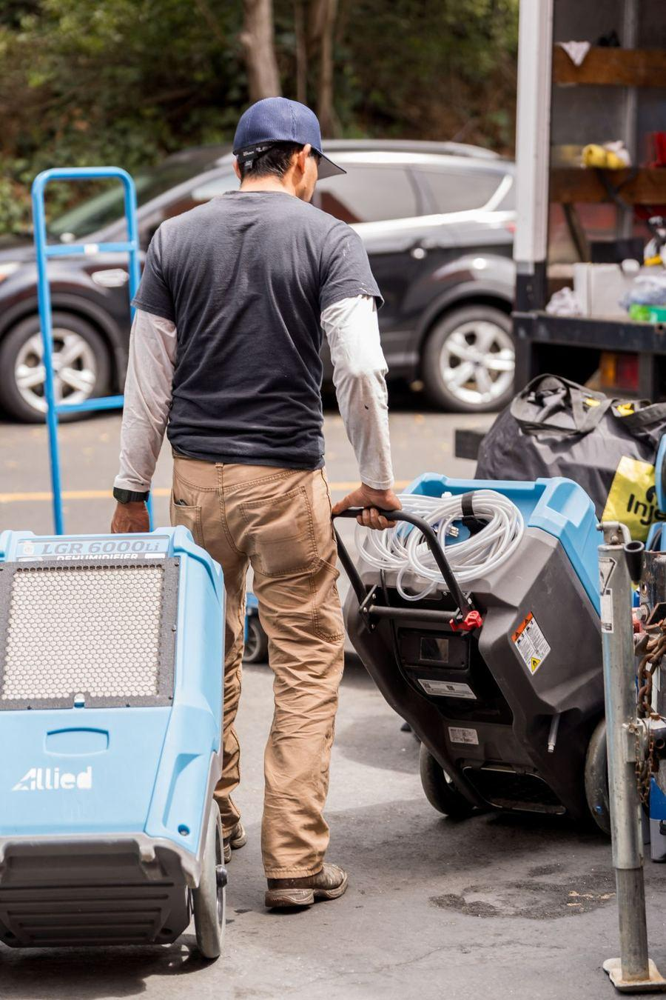
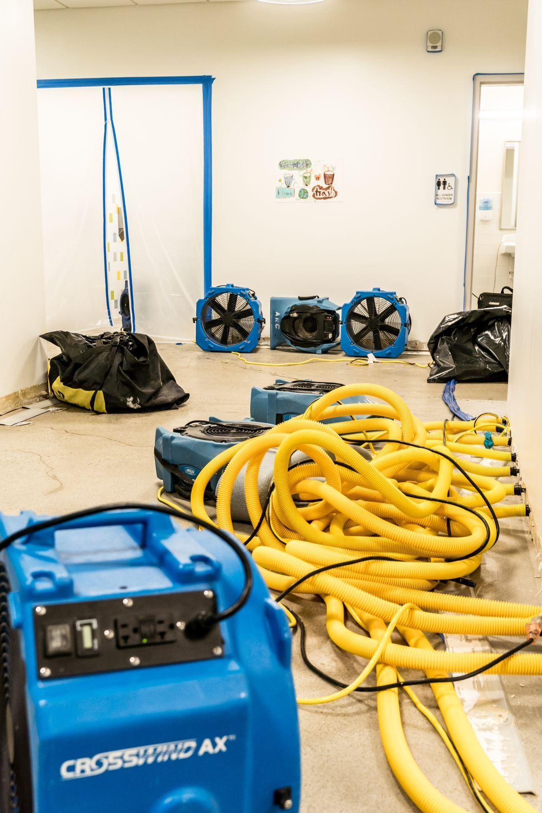

Fire Damage Restoration San Francisco Bay Area
IICRC FSRT certified fire damage restoration across the San Francisco Bay Area. Emergency board-up, soot removal, smoke odor elimination, and full reconstruction. Call (415) 529-5637.
When fire damages your home or business, the clock starts immediately. Soot begins corroding metal, glass, and plastic surfaces within hours. Smoke infiltrates HVAC systems and wall cavities, spreading damage far beyond the burned area. Allied Restoration Company responds within 60 minutes across the San Francisco Bay Area — stabilizing the structure, documenting the damage for insurance, and beginning systematic fire damage restoration from emergency response through final reconstruction.
Complete Fire Damage Restoration Services
Fire-damaged structures are vulnerable to weather, vandalism, and further collapse. Allied Restoration provides immediate board-up of windows, doors, and roof openings plus tarping to weatherproof the structure within hours of your call.
Dry-ice blasting removes soot from structural surfaces without chemicals or moisture damage — ideal for historic SF properties. HEPA vacuuming eliminates fine particulate matter. Chemical dry sponge cleaning for finished surfaces.
Hydroxyl generators neutralize smoke odor compounds at the molecular level — safe to operate occupied. Thermal fogging penetrates wall cavities, attic spaces, and HVAC systems. Permanent odor elimination, not masking.
Fire suppression water causes extensive secondary damage. Allied addresses sprinkler and firefighting water simultaneously with smoke cleanup — extraction, structural drying, and mold prevention all managed concurrently.
Salvageable personal property pack-out, inventory, and restoration. Ultrasonic cleaning for fine items. Soft goods and document restoration. Complete contents inventory for insurance claims — nothing discarded without documentation.
From structural repairs through finish work — framing, drywall, insulation, flooring, cabinetry, paint, and mechanical systems. Xactimate estimates submitted directly to your insurance carrier. Permits pulled as required.
Why Choose Allied for Fire Damage Restoration
- IICRC FSRT certified technicians — industry standard for fire and smoke restoration
- One company, complete project — emergency response through final reconstruction, no handoffs between contractors
- Xactimate estimating — the format all major insurance carriers require, prepared by our certified estimators
- Direct insurance coordination — we work with your adjuster, advocate for your full scope, and handle supplemental claims
- Dry-ice blasting capability — specialized equipment for historic and architecturally significant properties
- 20+ years Bay Area experience — we understand the unique characteristics of SF Victorian and Edwardian construction
Fire Damage Restoration Timeline
Emergency response, board-up, structural assessment, insurance documentation, extraction of suppression water
Soot removal, chemical cleaning, HEPA vacuuming, hydroxyl odor treatment, water damage drying concurrent
Controlled demolition of unsalvageable materials, insurance scope approval, reconstruction begins
Full reconstruction — framing, drywall, flooring, finish work. Final walkthrough confirms pre-loss condition.
Service Area — Fire Damage Restoration
Allied Restoration responds to fire damage restoration calls across the San Francisco Bay Area from four offices:
What Our Clients Say
4.9 stars · 87 Google reviews · Bay Area homeowners and property managers
"Pipe burst at 11pm on a Sunday. Allied had a crew at my Pacific Heights condo within 45 minutes. They were professional, thorough, and handled everything with my insurance. Couldn't have asked for better."
"We had significant mold in our crawl space — Allied found it during a routine inspection, gave us a clear scope and price, remediated it professionally, and cleared it on the first test. Honest company."
"Our restaurant had a grease fire. Allied handled the board-up, smoke cleanup, and full reconstruction. They worked nights and weekends to minimize our closure time. Back open in 3 weeks."
What Does Fire Damage Restoration Cost in San Francisco?
| Scope | Typical SF Bay Area Cost | Notes |
|---|---|---|
| Small kitchen fire (smoke only) | $2,000–$8,000 | Cleanup and deodorization |
| Single room fire | $8,000–$25,000 | Cleanup + reconstruction |
| Partial structure fire | $25,000–$100,000 | Major structural work required |
| Total loss / large structure | $100,000+ | Full rebuild — full Xactimate scope |
Get a Free Emergency Assessment
Available 24/7 — we typically respond within 15 minutes
For immediate emergencies call (415) 529-5637.
Our Work in the Bay Area
IICRC certified technicians — residential and commercial restoration






24/7 Commercial Emergency Response
IICRC certified · Bay Area offices · All insurance carriers · Xactimate documentation
(415) 529-5637